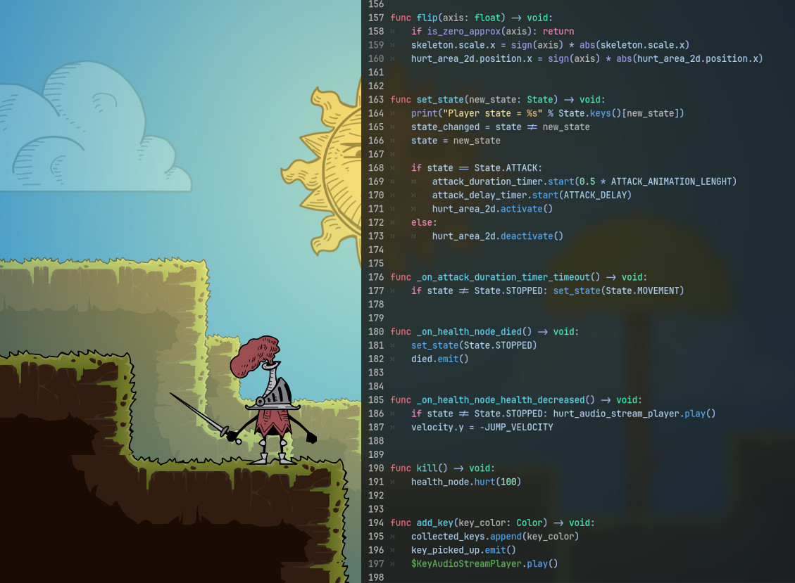
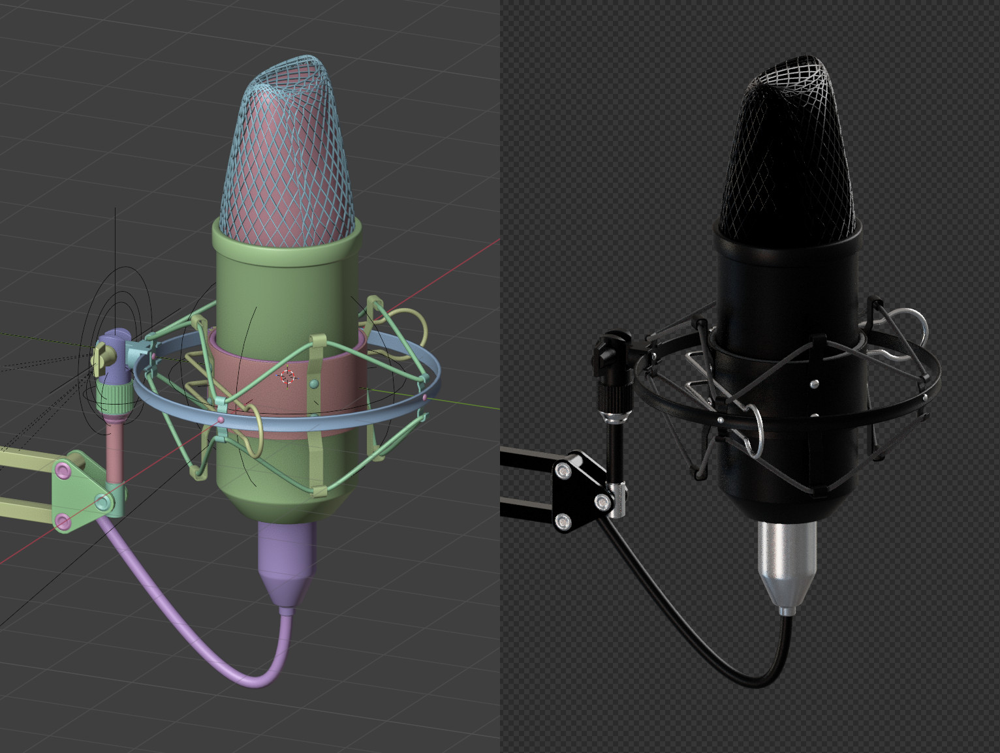
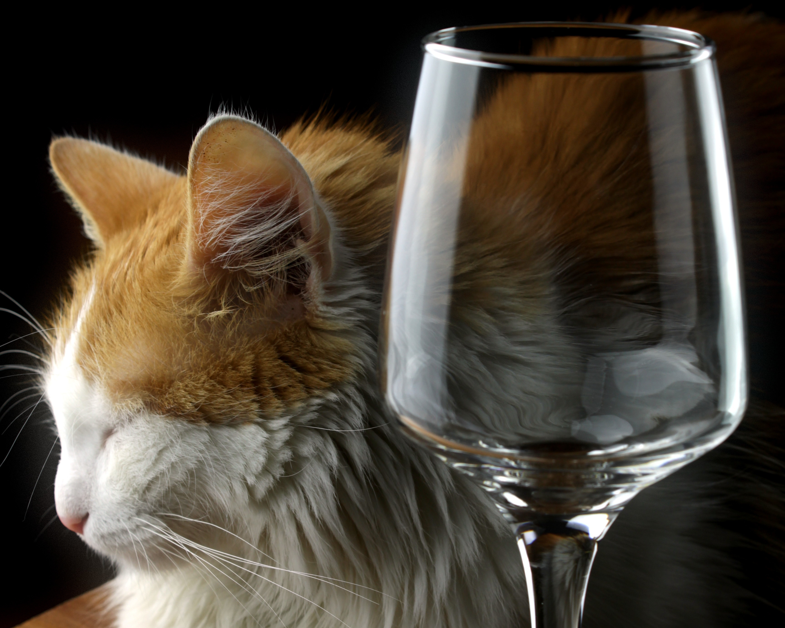

I am a versatile Technical Artist and Game Developer with a passion for rapid prototyping, engine architecture, and highly optimized code workflows. With a strong background in Object-Oriented Programming (C++, Java) and scripting (Python, Lua, GDScript), I specialize in bridging the gap between art and code for mobile and web platforms.
Currently building in Godot, I am actively expanding my pipeline into Unity to adapt to industry-standard toolsets. I leverage AI tools to streamline production and asset generation. My unique background spans from 3D modeling and refractive material lighting to audio engineering, allowing me to take full ownership of playable ads and interactive mobile prototypes from concept to deployment.
C++, Java, Python, GDScript, Lua. Experienced with code-based workflows, custom engine architecture, and mobile web optimization.
Godot (Advanced), Unity (Actively Adapting), Custom Engine Development. Familiar with integrating AI-driven workflows for asset generation.
Blender, Custom Shaders, Real-time Lighting, Topology. Deep understanding of Material Physics (IOR/Refraction) via commercial photography experience.
Reaper, Sound Design, Composition, Mixing. Creating tight, engaging audio loops for rapid-engagement mobile ads.

Veteran of 5 major Game Jams (Ludum Dare 56-59, GMTK 2026). Specialized in scoping, scripting, and delivering highly polished micro-games within 48-72 hour deadlines. Focus on immediate player feedback loops.

Extensive foundational experience in Blender, from base topology to engine integration. Documented 3D modeling workflows and optimization techniques for real-time rendering.

Commercial photography background specializing in refractive materials (wine glasses). This physical understanding of light, shadow, and composition directly translates to creating high-end technical art and shaders.
Global Game Jams (Ludum Dare, GMTK)
Developed full game loops, integrated audio, and modeled assets for rapid-release prototypes under strict deadlines, simulating playable-ad production cycles.
University Education
Mastered core architectural concepts via C++, Java, and Python. Applied these concepts to learn GDScript, Lua, and explore underlying custom game engine development.
Freelance
Photographed complex materials for corporate clients. Developed a keen understanding of composition and material rendering crucial for crafting visually striking game assets.
A highly optimized, lightweight HTML5 playable prototype demonstrating quick engagement loops suitable for mobile browsers.
[ HTML5 Canvas / Itch.io Embed Goes Here ]